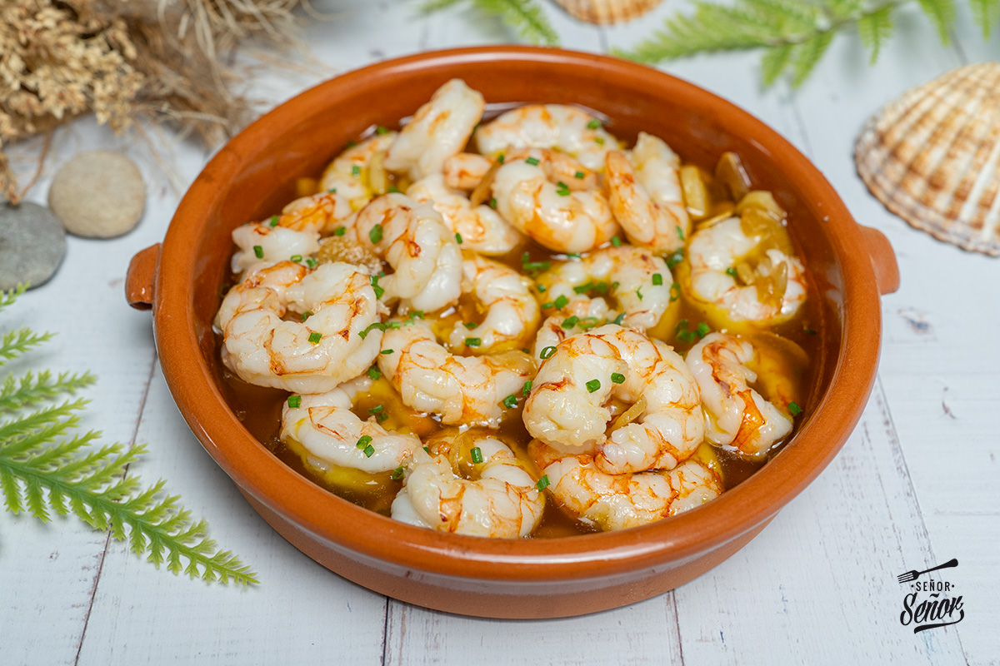

Gambas Al Ajillo
Home

Description
Gambas al Ajillo (Garlic Shrimp) is a Spanish tapas classic that delivers maximum flavor with minimal effort. Succulent shrimp sizzle in a bubbling pool of olive oil, infused with garlic, chili, and a hint of smoky paprika. It’s fast, flavorful, and best enjoyed with crusty bread to mop up every last drop of that golden, garlicky goodness.
Ingredients
- 300g Raw Shrimp
- 6 Garlic Cloves
- 80ml Olie Oil
- 1 Dried Red Chilli
- Salt
- Black Pepper
- Crusty Bread
- Fresh Parsley
- Lemon Wedge
Recipe
- Prep the Shrimp: Pat the shrimp dry with a paper towel. Season lightly with salt.
- Infuse the Oil: In a large pan or cazuela (earthenware dish), heat the olive oil over medium-low heat. Add the garlic slices and chili, cooking until the garlic turns golden (about 2 minutes). Be careful—don’t let it burn!
- Cook the Shrimp: Increase the heat to medium-high and add the shrimp. Sprinkle in the paprika and cook for 2-3 minutes, flipping the shrimp until they turn pink and opaque.
- Serve Immediately:Remove from heat and sprinkle with fresh parsley.Squeeze a bit of lemon juice (if using) and serve piping hot with crusty bread.
- Warning: The oil is dangerously delicious—you might forget the shrimp and just dunk bread in it! 😆 🍞🔥